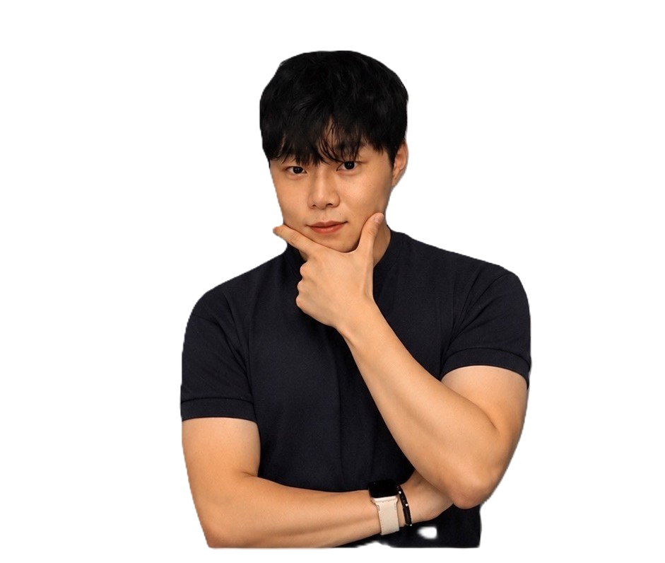

- 이윤건의 요리 포트폴리오 / 2026
정성을 담아
한 접시.
요리의 완성은 작은 디테일에서 시작됩니다.
재료를 다루는 손끝부터 한 접시의 마지막 균형까지.
기본에 충실하고, 표현에는 섬세함을 더합니다.
요리 작품 보기
아래로 스크롤
이윤건
요리사 · 대한민국

요리사 — 이윤건
작은 디테일까지
한 접시마다 정성을
매일 배우는 요리사
01 요리 작품
요리의 기록.
한 접시에 담긴 생각과 디테일.
음식을 클릭해 각 작업을 더 자세히 살펴보세요.
재료의 준비부터 한 접시의 완성까지, 직접 만든 요리의 기록입니다.
02 경험과 성장
배움의 여정.
지금까지 쌓아온 배움과 경험이
다음 접시를 만드는 바탕이 됩니다.
경력과 교육
2023 — 2026
호텔조리과
한국호텔실용관광대학교
주방 실무
후라토 식당
주방 실무 및 팀원 간 협업 경험
2022
조리 자격증 강의
성인반·학생반 교육 활동
수상 경력
2022 서울국제식음료외식조리경연대회금상 ·
국회의장상
국회의장상
2022 서울국제식음료외식조리경연대회
금상 · 국회의장상
보유 자격증총 7종
한식조리기능사양식조리기능사중식조리기능사일식조리기능사복어조리기능사파티요리전문가유로피안요리전문가